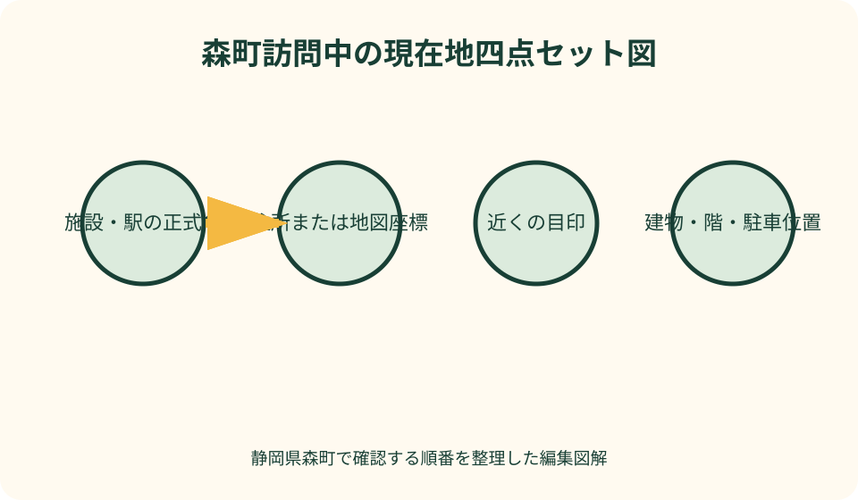
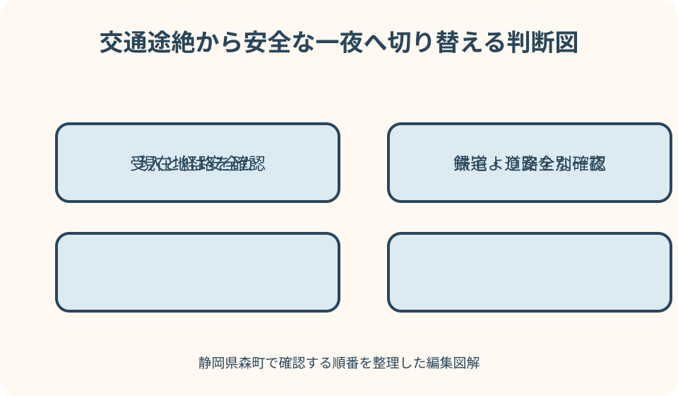

防災・家族の備え｜最終確認 2026-08-10
静岡県森町の訪問中に災害が起きたら｜現在地・交通途絶・宿泊の備え
森町を訪問中の災害では、住民のように地名や避難経路を知っているとは限りません。まず現在地を言葉にし、その場所に迫る危険から離れ、町の開設情報と道路・鉄道の公式情報を別々に確認します。帰宅できない場合まで含めて考えることが、無理な移動を減らします。

編集イラスト結論：現在地・危険・移動可否を別々に確かめる
訪問者が最初に答えるべき問いは、『家へ帰れるか』ではなく『今いる場所は何の危険にさらされているか』です。地震、大雨、河川増水、土砂災害、火災では安全な方向が異なり、目的地へ向かう移動がかえって危険になる場合があります。
現在地は、店舗名や観光地名だけでなく、住所、近くの交差点や駅、スマートフォンの地図座標まで確認します。同じ施設でも敷地が広く、駐車場と建物、川側と斜面側では状況が違うため、家族への連絡にも具体的な位置を添えます。
次に、森町の防災情報、ハザードマップ、気象庁の情報を見ます。道路が通れるか、鉄道が動くかは町の避難情報とは別の事実なので、静岡県の道路規制情報や交通事業者の公式運行情報で確かめます。
この記事は特定の場所の安全、避難所の開設、交通の復旧、宿泊の空室を保証しません。現場の係員、消防・警察、森町の発表があるときはその指示を優先し、危険が切迫している場面では検索を続けるより身を守る行動を取ります。
揺れ・大雨・火災で最初の動きを変える
地震で強い揺れを感じたら、まず頭を守り、ガラス、看板、棚、石垣などから離れます。車を運転中なら急ブレーキを避け、周囲に注意しながら道路の左側へ止め、ラジオなどで情報を得るという静岡県警察の案内を基本にします。
大雨では、川、水路、アンダーパス、斜面へ様子を見に行きません。気象庁のキキクルは土砂、浸水、洪水などの危険度の高まりを地図で確認する材料ですが、画面を見るために危険な屋外へ出ることは避けます。
火災や煙がある場合は、施設スタッフの誘導に従い、煙を避けて建物から離れます。忘れ物や車を取りに戻ることより、退避を優先します。けが、閉じ込め、火災など緊急の通報が必要なら119番、事件・事故なら110番です。
どの災害でも、同行者とはぐれないことが重要です。子ども、高齢者、障害のある人、日本語で状況を理解しにくい人がいる場合は、担当する大人を決め、全員が一斉に電話をかけ続けるのではなく代表者が情報をまとめます。
森町で現在地を30秒で伝える四点セット
家族や救助機関へ伝える四点は、『施設・店・駅の正式名』『住所または地図座標』『近くの目印』『自分がいる建物・階・駐車場』です。スマートフォンの地図で位置を長押しし、共有用のピンを作る方法を出発前に試しておきます。
山間部や広い屋外施設では、施設名だけでは位置を絞れないことがあります。入口から歩いた方向、コース名、橋や案内板の番号、最後に通過した場所、時刻をメモします。圏外になったら位置情報の送信も止まる前提で考えます。
車ならナンバー、車種、色、駐車場所を加えます。鉄道なら駅名、ホーム、列車の進行方向、バスなら停留所名や便を記録します。救助要請でない家族連絡では、負傷の有無、電池残量、次回連絡時刻も短く添えます。
『森町にいる』だけでは北海道など同名地との混同も起こり得ます。『静岡県周智郡森町』から書き始め、施設の所在地を領収書、予約確認、現地掲示、公式地図の複数で照合すると、誤った場所を共有しにくくなります。
ハザードマップは現在地から安全な方向を見る
森町防災ハザードマップは、町内で想定される河川氾濫や土砂災害の区域、防災関係施設を確認する入口です。訪問前に目的地だけでなく、駅や駐車場から目的地までの経路、食事場所、立ち寄り先も地図で見ます。
発災後は、地図上で最寄りに見える施設へ機械的に向かわないでください。川を渡る、斜面沿いを進む、冠水路を通る経路なら危険です。現在地と災害種別を照合し、施設スタッフや町の案内を受けて安全な方向を選びます。
スマートフォンの電波や電池が失われる可能性があるため、訪問地域の地図は出発前に画面保存または印刷します。ただし、保存した地図は当日の通行止めや避難所開設を示さないため、固定情報と最新情報を混同しません。
森町の町指定避難所等の一覧は、施設名と所在地を確認する資料です。一覧に載っていても、その災害で開設されている、訪問者が直ちに宿泊できる、駐車できるという意味ではありません。当日の開設発表を確認します。

一時避難と避難所滞在を混同しない
内閣府は、指定緊急避難場所を災害の危険から命を守るため緊急的に避難する場所、指定避難所を避難した人などが一定期間滞在する施設と区別しています。名称が似ていますが、目的と災害種別の扱いが同じではありません。
旅先では、今いる堅牢な建物の安全な区画で待つ、施設が指定する集合場所へ移る、町が開設した場所へ避難するなど、状況によって行動が変わります。『公共施設なら安全』『高い場所なら全災害に有効』とは決めつけません。
観光施設、寺社、店舗、駅、駐車場は、通常営業時の目的と災害時の役割が異なります。施設スタッフへ、避難方向、建物から出るべきか、集合場所、トイレ、けが人の連絡先を尋ね、許可なく立入禁止区域へ入りません。
指定避難所も無料の旅行者向け宿泊施設ではありません。安全確保のため利用が必要な状況はあり得ますが、開設、受付、滞在条件は災害ごとに変わります。観光の予定変更による宿泊は、後述する民間宿泊の代案も並行して探します。
交通途絶は道路・鉄道・迎えを別判定する
鉄道が止まったから自家用車なら帰れる、県道が通れないから別の細道なら通れる、とは限りません。鉄道、路線バス、一般道、高速道路を別々に確認し、復旧見込みが出ていない段階で一つの代替手段へ人が集中することも見込みます。
天竜浜名湖鉄道を利用する場合は、同社の運行情報で遅れや運休を確認します。同社ページは概ね30分以上の遅れを案内するとしているため、掲載がないことを定刻運行の保証とせず、駅や係員の案内も確認します。
道路は静岡県道路通行規制情報提供システム、国土交通省の防災ポータル、道路管理者や警察の発表を照合します。地図アプリの推奨経路は、災害規制、冠水、倒木、路肩崩壊を即時反映しない場合があるため、迂回の根拠にしません。
家族へ迎えを頼む前に、現在地までの全区間と帰路の規制を調べます。安否を確かめたい気持ちで車を向かわせると、渋滞や緊急車両の妨げになり得ます。現地が安全なら、移動せず待つ案も正式な選択肢にします。
車内で地震に遭ったときと車を離れる判断
走行中に揺れを感じたら、急操作をせず安全に減速し、道路左側へ停止して情報を得ます。橋の上、斜面直下、冠水し始めた場所など、その場に別の危険があるときは、警察官や道路管理者の指示と周囲の状況に従います。
車を置いて避難する場合について、静岡県警察は、道路外へ移動できないときはエンジンを切り、キーを付けたまま、窓を閉め、ドアをロックしないなどの案内を示しています。車検証などの貴重品は携行します。
災害時は一般車両の交通規制が行われる場合があります。『宿へ戻るだけ』『家族を迎えに行くだけ』でも規制区間へ入れるとは限りません。現場の警察官や標識に従い、規制を避けるため生活道路へ入り込まないでください。
車内待機は、浸水、土砂、熱中症、低体温、一酸化炭素中毒などの危険を伴います。安全な駐車場所か、排気口が塞がれていないか、燃料、気温、体調を見て、長時間の宿泊代案として安易に固定しません。
家族連絡は一通の定型文と次回時刻を決める
電話が混み合う場面では、全員へ繰り返し発信するより、短いメッセージを一度送り、代表連絡先に集約します。文面は『本人名／静岡県周智郡森町の現在地／けがの有無／一緒にいる人／移動か待機か／次回連絡時刻』の順にします。
例は『大石、森町○○施設の受付付近、けがなし、二人一緒、館内の指定場所で待機、18時に再連絡』です。未確認の帰宅予定は書かず、電池が少ない場合は残量と充電手段も伝えます。位置共有だけ送って説明を省かないことが大切です。
森町の防災情報ページは、NTT西日本の災害用伝言ダイヤル171とweb171を案内しています。家族で登録・確認に使う電話番号を平時に決め、体験利用できる機会に操作しておくと、音声とインターネットの経路を分けられます。
災害用伝言は万能ではなく、端末故障、圏外、電池切れもあります。同行者一人の電話番号、紙の連絡先、宿泊予約番号を持ち、公衆電話や施設電話を使う場合に備えて家族の番号を暗記または紙で携行します。
帰れない夜の宿泊代案を三段階で用意する
宿泊代案Aは、予約済みの宿や訪問先が安全を確認し、延泊を受けられる場合です。建物と経路が安全か、停電・断水、食事、薬、支払い、翌日の移動を確認します。通常時の営業案内だけで受入可能と判断しません。
代案Bは、危険区域外にある親族・知人宅です。突然向かわず、受入人数、寝具、駐車、持病、乳幼児、ペット、感染症への配慮を連絡します。そこへ至る道路が安全であることも、出発直前に公式情報で確かめます。
代案Cは、当日確保する民間宿泊施設です。一つの予約サイトだけでなく、宿の公式窓口へ営業と交通を確かめます。空室表示があっても停電や従業員の避難で受けられない場合があり、予約完了画面だけで移動を始めません。
指定避難所は、災害の危険により滞在が必要な人のために開設される施設です。帰りの列車が遅れたという理由だけで利用できると決めず、町の開設情報と受付案内を確認します。宿泊費、予備日、薬の追加を旅行計画に含めます。
訪問用の小さな防災セットは通信と一泊を支える
日帰りでも、水、行動食、常用薬、モバイルバッテリー、充電ケーブル、携帯ライト、雨具、保温用の薄手シート、マスク、簡易トイレ、少額の現金を小さな袋にします。全員分を一人の車へ置かず、各自が最低限を持ちます。
薬は当日分だけでなく、交通途絶による一泊を見越して主治医や薬剤師と相談した範囲で携行します。薬名、用量、アレルギー、緊急連絡先を紙にも書きます。この記事は服薬変更や医療判断の代わりにはなりません。
紙には目的地と宿の住所、同行者番号、家族の代表番号、保険情報、公共交通の運営者名を書きます。スマートフォンの予約画面や電子切符が開けない場合に備え、予約番号や帰路の候補も画面保存します。
子どもには氏名と保護者連絡先、高齢者には服薬と支援内容を、本人が持てる形で用意します。ただし個人情報が外から丸見えにならないよう収納し、はぐれたときに係員や警察へ見せる方法を家族で練習します。
外国語で情報を得る経路も出発前に確保する
日本語で警報や館内放送を理解しにくい同行者がいる場合は、観光庁監修の訪日外国人向けアプリSafety tipsを候補にします。JNTOは、地震速報、津波警報、気象警報などの通知と、避難行動の案内、多言語の表現を紹介しています。
アプリの通知だけに頼らず、森町や静岡県の公式情報を日本語が分かる同行者または施設スタッフと照合します。自動翻訳では地名、避難場所と避難所、運休と遅延などが取り違えられることがあるため、原文と時刻を残します。
『けがをしています』『薬が必要です』『家族とはぐれました』『ここは安全ですか』などの短文を、本人が使う言語と日本語で画面保存します。電話番号110と119、宿、家族、同行者の連絡先も文字で持ちます。
通信が使えないときは、周囲の案内板、職員の誘導、ラジオ、同報無線など複数の手段を使います。分からないまま群衆について行くのではなく、指差しや地図を使って行き先と危険の種類を確認します。
訪問前の準備が持つ良い点
良い点は、観光予定と避難準備を同じ旅程表に置くと、災害時だけでなく通常の遅延や迷子にも強くなることです。住所、交通運営者、宿、家族連絡先が一枚にあれば、電池が減った場面でも検索回数を抑えられます。
ハザードマップを出発前に見ると、目的地の魅力を損なうのではなく、雨天時に避ける経路、早く切り上げる時刻、服装、車を置く場所を具体化できます。山間部と町なかを同じ移動時間で見積もる失敗も減ります。
宿泊代案の予算と条件を先に決めれば、運休が発表された直後に危険な帰宅を急がずに済みます。キャンセル条件、追加の薬、翌日の仕事や学校への連絡担当まで決めておくと、現地の人が安全判断へ集中できます。
家族にとっても、『何時まで連絡がなければ誰がどこへ確認するか』が明確になります。すぐ車で迎えに行くのではなく、本人、施設、交通事業者、公式防災情報の順に事実を集める約束が二次的な危険を減らします。
訪問者向け情報で注文したい点
注文したい点は、観光施設、避難所、道路、鉄道の情報が別々のサイトにあり、土地勘のない人には現在地からの順番が見えにくいことです。観光案内に防災ページ、住所、最寄りの公式交通情報への導線があると使いやすくなります。
避難所一覧には施設名と住所があっても、その災害で開いているかは別問題です。開設中、満員、利用条件、駐車可否などを時刻付きで伝える画面と、古い一覧を区別できる表示が、訪問者の誤移動を防ぎます。
交通事業者にも、運休だけでなく次回更新時刻、代替輸送の有無、駅で待機できるかを、分かる範囲で明示してほしいところです。ただし発災直後は確定できない情報が多く、『未定』を復旧間近と読み替えない利用者側の理解も必要です。
訪問者側は、施設スタッフがすべての道路や宿泊先を即答できると期待しないことです。安全誘導を優先する職員へ同じ質問を繰り返さず、掲示や公式リンクを確認し、同行者の代表一人が問い合わせをまとめます。
代案・結論：帰宅ではなく安全な一夜を基準にする
交通が止まった場合の第一案は、現在地が安全なら施設の指示に従って待機し、公式情報の更新時刻を待つことです。第二案は安全な経路で受入確認済みの宿や知人宅へ移ること、第三案は町が開設した適切な施設へ案内に従って避難することです。
三案にはそれぞれ、使える条件、使えない条件、確認先を付けます。『雨が弱まった』『地図アプリが通れると表示した』『他の車が走っている』だけを道路安全の根拠にせず、規制と現場状況を確認します。
帰宅時刻が遅れる損失より、危険な道で孤立する損失の方が大きい場面があります。家族、勤務先、予約先へ遅延を伝え、安全な一夜を確保する判断を正当な選択肢として、旅行前から共有してください。
結論として、現在地の明文化、町の防災情報、災害別ハザード、交通の公式発表、連絡定型文、宿泊三案を一組にします。どれか一つが使えないとき次へ移れることが、旅先での余裕になります。

大石の視点：旅程表に戻れない一泊を加える
大石の視点では、良い旅程は立ち寄り先が多い計画ではなく、天候が変わったときに削れる計画です。森町北部の訪問先と町なかの食事、帰りの列車を分刻みでつなぐと、一か所の遅れで無理な移動が生まれます。
予約表には『行く場所』の下へ、『行かない基準』を書きます。大雨情報、施設の休止、道路規制、同行者の体調悪化があれば次を中止し、どこで待つかを決めます。予定を守ることより、変更を早く決めることを価値にします。
不動産を見るための訪問でも、豪雨直後に川、擁壁、斜面、空き家の内部を確認しに行ってはいけません。現地確認は天候と立入許可が整った別日に行い、危険箇所は行政資料や所有者の記録から先に調べます。
森町の魅力は町なかだけでなく山間部にもありますが、地形の違いは帰路の選択肢にも影響します。『車があるから自由』ではなく、運転者が疲れている、夜間、雨、規制がある場合は、安全な滞在へ切り替えます。
発災から六時間の行動メモ
発災直後は、身を守り、けがと火災を確認し、同行者を集めます。次の十分で現在地四点セットを記録し、施設の指示と森町の発表を確認します。移動が危険なら、その場でより安全な区画へ移ります。
一時間以内は、家族へ定型文を送り、交通情報を鉄道、バス、道路に分けて確認します。運休や規制が未定なら、次回の公式更新時刻をメモし、電池を節約します。充電場所があっても譲り合い、通信を動画視聴へ使いません。
夕方が近い段階では、明るいうちに宿泊三案へ連絡します。空室だけでなく安全な経路と受入確定を確認し、移動しない案も比較します。子ども、高齢者、持病のある人は休憩、食事、薬、トイレを早めに整えます。
六時間後も帰路が不明なら、帰宅を何度も試みず、一夜を安全に過ごす準備へ切り替えます。町や運営者の案内を再確認し、家族へ現在地と次回連絡時刻を更新します。翌朝も道路と運行の再確認後に動きます。
出発前五分の最終確認
出発前に、森町の目的地住所、天気と警報の見通し、ハザードマップ、交通運行、帰宅できない場合の宿泊予算を見ます。イベントが開催予定でも、往復経路が安全とは限らないため、主催者と交通の情報を分けます。
スマートフォンは満充電にし、モバイルバッテリーが実際に給電できるか確認します。森町防災メール、森町公式LINE、静岡県防災アプリなど利用する経路は、通知設定と現在地権限を旅行前に確かめます。
家族へは、目的地、同行者、移動手段、帰宅予定、連絡がない場合の確認時刻を送ります。細かな全行程を監視するためではなく、災害時に捜す範囲を狭め、迎えの車を早まって出さないための共有です。
最後に、天候や体調が悪ければ延期する選択を残します。『予約したから』『遠くから来たから』は危険区域へ入る理由になりません。目的地の営業と安全な往復が確認できて初めて、訪問を始めます。
まとめ：知らない土地ほど止まる判断を早くする
静岡県森町の訪問中に災害が起きたら、施設名、住所、目印、建物内の位置で現在地を確定し、危険の種類を見ます。最寄りの場所へ反射的に移動せず、安全な方向と町の開設情報を確認します。
交通は鉄道、バス、道路を分け、運営者、静岡県、国土交通省などの公式情報を照合します。運転再開見込みが未定なら、迎えや徒歩移動を急がず、今いる場所で安全に待てるかを先に判断します。
家族には、けが、現在地、同行者、行動、次回連絡時刻を一通で伝えます。帰れない夜には、予約済みの滞在先、安全な知人宅、営業と経路を確認した民間宿を比較し、避難所を通常の宿代わりと見なしません。
安全を保証する地図やアプリはありません。現場の変化、町の発表、気象と交通の更新を見ながら、予定を中止し、止まり、一夜を越す判断を早く取れる準備こそ、訪問者の防災になります。
公式情報・確認先
掲載内容は次の一次情報を基礎に整理しました。営業、料金、催し、交通は変わるため、出発前または手続き前にリンク先で最新情報を確認してください。
- 防災情報（静岡県森町、2026-08-10確認）
- 森町防災ハザードマップ（静岡県森町、2026-08-10確認）
- 町指定避難所等について（静岡県森町、2026-08-10確認）
- 森町防災メール（静岡県森町、2026-08-10確認）
- 観光案内・地図（静岡県森町、2026-08-10確認）
- 総合防災アプリ『静岡県防災』（静岡県、2026-08-10確認）
- 静岡県道路通行規制情報提供システム（静岡県、2026-08-10確認）
- 災害時の交通規制について（静岡県警察、2026-08-10確認）
- 避難場所に関すること（内閣府、2026-08-10確認）
- キキクル（気象庁、2026-08-10確認）
- 災害時、見てほしい情報［交通・物流情報］（国土交通省、2026-08-10確認）
- Safety tips for travelers（日本政府観光局、2026-08-10確認）
- 運行情報（天竜浜名湖鉄道株式会社、2026-08-10確認）